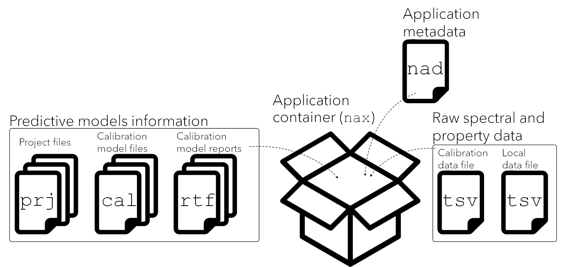

ProxiMate: Structure of the applications
2026-08-27
Source:vignettes/af-proximate-structure-of-the-applications.qmd
1 Introduction
This package can be used to build and/or update NIR applications that are ready to be consumed by the ProxiMate series of NIR sensors manufactured by BUCHI Labortechnik AG. Once an application is installed in a ProxiMate device, it can be used to predict the properties of a given matrix using the spectral models contained in that application.
This package builds upon the standard structure of the ProxiMate applications, which are conventionally developed with the compiled-executable software “NIRWise PLUS” offered by BUCHI. Therefore, the files output by proximetricsR follow the same structure of the ones output by “NIRWise PLUS”. No changes or improvements on these output files have been conducted for the development of proximetricsR.
2 Structure of the ProxiMate predictive applications
ProxiMate applications can be described as a collection of predictive models that, along with other metadata, are packed into a single file that can be installed in a ProxiMate sensor. Once an application is imported, the sensor can be used to predict the properties of samples the application was built for.
A Proximate application comprises the following files:
Calibration data file (.tsv): a file containing the main data used to build the predictive models.
Local data file (.tsv): a file where the spectral data (and eventually property data) collected by the user is stored.
Calibration model files (.cal): these files contain a predictive model along with the spectral processing methods to be applied before the model is used for prediction. A .cal file for every model is present in the application.
Project files (.prj): these files contain information about the model parameters and results. For each model in the application, a .prj file is present in the application.
Report files (.rtf): a file containing a summary of the model calibration results.
Application metadata file (.nad): a file containing some parameters of the application (e.g. scanning time, standard operating procedure, property units, etc).
Application file (.nax): a single “container” file where all the previous files are stored as shown in Figure Figure 1.
2.1 Calibration data file (.tsv)
This is the main input file which contains the predictor (spectra) and response (properties) data used to calibrate the models. The data is stored as a tab separated table. Every row in this table represents a single spectral measurement of a sample along with its associated data (e.g. property values, date, etc.). This table is usually exported directly from the ProxiMate devices and typically contains columns with the following fields:
ROW: a numeric which indicates the row number.Check: a logical valuetrueorfalse. Note that these values are written in low-case letters and do not representRlogical values, therefore they are interpreted inRas characters. However, they are interpreted by ProxiMate systems as logical.Date: the date in which the measurement was collected (day/month/year hour:min:sec, e.g.17/12/2020 10:06:25)SNR: a character string with the serial number(s) of the detector(s) in the NIR sensor device. An additional serial number is provided if measurements were done with a sensor that includes a detector for measuring spectra in the visible range of the electromagnetic spectrum (e.g.918FG118;1502091).ID: a character string indicating the sample name.Barcode: a character string with metadata of the sample. It is a placeholder for data which is typically read from barcode scanners.Note: a character string with metadata of the sample.Result: a string containing numbers separated by a semicolon. Each number indicates the predicted value of a property. This information is shown if the samples in the file were collected by the ProxiMate sensor using a predictive application. This column is not used byproximetricsR.Reference: a string containing numbers separated by a semicolon. Each number indicates the reference value of a property. This information is shown if the user of the ProxiMate sensor input these values in the instrument. This column is not used byproximetricsR.Properties: multiple columns that contain the reference values of the corresponding property. For each property, there is a single column with the property name as its header. The name of each property is assigned by the user.
Begin: a string indicating the time at which the measurement started (hour:min:sec, e.g.10:06:25).End: a string indicating the time at which the measurement ended (hour:min:sec, e.g.10:06:40).Recipe: a string indicating the matrix or the application name.Composition: an empty column (not used).Images: an empty column (not used).-
Spectral data: the spectral data in ProxiMate devices is collected by using diode-array detectors (see Workman and Burns 2001 for a description of this type of technology). These detectors record the spectral information at different photodiode pixels. The .tsv file contains absorbance data collected at each pixel by the detectors. Each pixel represents an specific wavelength (in nm units). To obtain the wavelength information for each pixel a polynomial function needs to be applied to each pixel number/index. The following columns contain all the necessary spectral information:
#X1: index of the first pixel(s). If there are two detectors (visible and NIR), this field contains two numbers: the index of the first pixel for the visible detector and a second number indicating the index of the first pixel of the NIR detector. For example, a value823, 4indicates that the index of the first pixel for the visible detector is823and the index of the first pixel for the NIR detector is4. The NIR pixel indices are zero-based, therefore the correct one-based counts is5.#X2: index of the last pixel(s). If there are two detectors (visible and NIR), this filed contains two numbers: the index of the last pixel for the visible detector and a second number indicating the last of the first pixel of the NIR detector. For example, a value1074, 272indicates that the index of the last pixel for the visible detector is1074and the index of the last pixel for the NIR detector is272.The NIR pixel indices are zero-based, therefore the corrected one-based counts is273.#X3: a string with the set(s) of polynomial coefficients. If there are two detectors (visible and NIR), this field will contain two sets of coefficients, otherwise it contains only one set corresponding to the coefficients of the NIR detector. The coefficients are separated by semicolon, while the set of coefficients (if applies) are separated by a comma. The polynomial order is inferred/derived from the number of values in the set of coefficients and they are sequentially arranged from the largest to the lowest degree. For example, the value0;0;-7.586146E-05;2.12726;-1301.079, 2.04E-10;-1.28E-07;2.80E-05;-4.76E-03;3.89;880.06represents the coefficients of a fourth degree polynomial for the visible part (before the comma) and a fifth degree polynomial for the near-infrared part (after the comma). For example, the first value in the wavelengths for both NIR and VIS, using the example values for#X1to#X3as above, can be obtained as follows:
first_pixel_nir <- 4
first_pixel_count_nir <- first_pixel_nir + 1
first_wavelength_nir <- 2.04E-10 * first_pixel_count_nir^5 +
-1.28E-07 * first_pixel_count_nir^4 +
2.80E-05 * first_pixel_count_nir^3 +
-4.76E-03 * first_pixel_count_nir^2 +
3.89 * first_pixel_count_nir +
880.06
first_wavelength_nir[1] 899.3944
first_pixel_count_vis <- 823
first_wavelength_vis <- 0.0 * first_pixel_count_vis^4 +
0.0 * first_pixel_count_vis^3 +
-7.586146E-05 * first_pixel_count_vis^2 +
2.12726 * first_pixel_count_vis +
-1301.079
first_wavelength_vis[1] 398.2728A sequence of numbers can be used to obtain all the wavelengths at once. This sequence must start with the index of the first pixel and end with the index of the last pixel. Continuing the previous example, we can obtain all wavelengths at once as follows:
pixel_sequence_nir <- 4:272
pixel_sequence_count_nir <- pixel_sequence_nir + 1
wavelengths_nir <- 2.04E-10 * pixel_sequence_count_nir^5 +
-1.28E-07 * pixel_sequence_count_nir^4 +
2.80E-05 * pixel_sequence_count_nir^3 +
-4.76E-03 * pixel_sequence_count_nir^2 +
3.89 * pixel_sequence_count_nir +
880.06
wavelengths_nir[1:5][1] 899.3944 903.2345 907.0661 910.8892 914.7040[1] 1741.389 1744.169 1746.953 1749.742 1752.534 1755.332
pixel_sequence_vis <- 823:1074
wavelengths_vis <- 0.0 * pixel_sequence_vis^4 +
0.0 * pixel_sequence_vis^3 +
-7.586146E-05 * pixel_sequence_vis^2 +
2.12726 * pixel_sequence_vis +
-1301.079
wavelengths_vis[1:5][1] 398.2728 400.2751 402.2773 404.2793 406.2812[1] 886.2704 888.2354 890.2003 892.1649 894.1295 896.0939-
- Spectral data: the spectral data of each pixel are stored in the columns named with a hash character followed by a number (e.g.
#3). Note that these numbers do not represent the pixel index.
- Spectral data: the spectral data of each pixel are stored in the columns named with a hash character followed by a number (e.g.
2.2 Local data file (.tsv)
This file has the same structure as the “Calibration data file”. The only difference is that this local file is used to store spectra measured by the user of the application. A spectrum is written to this file only if one or more of its reference (response) values are manually input by the user directly in the instrument.
2.3 Calibration model files (.cal)
These files store both the instructions for spectral pre-processing and the parameters of calibrated models. Each file contains one single model, i.e. if an application contains n predictive models, then there will be n cal files in the application. These files are used by the the sensor instruments to conduct the required predictions of the response variables in the application.
2.4 Project files (.prj)
These files store all the final results obtained when a calibration model is built. This file can be imported into the NIRWise PLUS software to visualize the calibration model results and the used settings. Note that the files are not used to generate predictions as their purpose is limited to the visualization and review of the models. The project file may contain the pre-pocessed spectra, the data matrices generated during the calibration process, the information about the type of model validation, the outlier detection method used, the response residuals, etc.
2.5 Report files (.rtf)
These files are in rich text format, each containing a report on the results of the calibration of a single response variable in the application. This report includes information such as the original tsv file used for the calibrations, the number of observations used and their indices in the tsv table, the standard error of the calibration (SEC), the coefficient of determination (R^2), etc.
2.6 Application metadata file (.nad)
This file contains application metadata such as the application name (the name that will be shown when it is imported into a sensor), the sample measurement geometry, measurement time, the creation date, the standard operating procedure, additive (offset) and multiplicative (slope) adjustments to the predicted response values, outlier detection parameters, etc.
2.7 Application file (.nax)
This file acts as a container for all the files described above. It is in fact a ZIP file used to pack and compress the application files. The file and folder structure inside a container with n predictive models can be described as follows:
<appliation>.nax
│ <application>.nad
│
└───Calibrations
│ <application>.<property_1>.cal
│ <application>.<property_1>.prj
│ <application>.<property_1>.rtf
│ ...
│ <application>.<property_n>.cal
│ <application>.<property_n>.prj
│ <application>.<property_n>.rtf
│
└───Data
│ │ <Calibration data file>.tsv
│
└───Local
│ <Local data file>.tsvReferences
Workman, JJ, and Donald A Burns. 2001. “Commercial NIR Instrumentation.” PRACTICAL SPECTROSCOPY SERIES 27: 53–70.